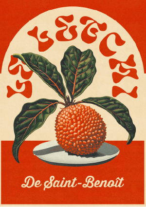

LETCHI
Fruit star des fêtes, joyau sucré de l’Est de La Réunion. Sa peau rugueuse cache un trésor juteux et parfumé, attendu chaque année comme un petit miracle saisonnier. Une déclaration d’amour à ce fruit généreux, symbole d’abondance, de partage… et de doigts collants.